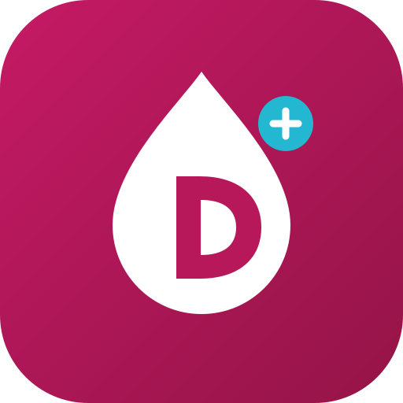

Datos esenciales, sin dosis.
Sin identificación del paciente. No se guardan datos.
Los seis PDF aportados son la fuente de esta app. Los resultados resumen ramas concretas; consulta el original para completar la valoración.
Esta preferencia se recuerda solo en este dispositivo.
Añade la app a la pantalla de inicio para abrirla directamente desde su icono. No necesitas descargarla de una tienda.
Si abres el enlace desde WhatsApp u otra app, utiliza primero «Abrir en Safari» o «Abrir en Chrome».
Abre la aplicación con conexión para preparar el acceso sin Internet.
Para recibir actualizaciones, vuelve a abrirla con conexión. El navegador puede eliminar los archivos guardados si necesita espacio.
Aplicación creada por Antonio Arnal exclusivamente para el Congreso de la redGDPS 2026, como recurso de su presentación sobre diabetes e inteligencia artificial.
Consulta guiada de diabetes tipo 2, insuficiencia cardíaca, enfermedad renal crónica, obesidad, enfermedad hepática metabólica e insulinización. Adaptación móvil de la webapp de la diapositiva 28.
Recurso docente para profesionales sanitarios, pendiente de validación clínica formal. No sustituye el juicio clínico ni la revisión de la ficha técnica. Los algoritmos y documentos de referencia pertenecen a sus respectivos autores. Esta aplicación es independiente y no implica afiliación ni aval oficial de redGDPS.
Los datos introducidos se procesan en este navegador. La app no guarda consultas ni envía datos clínicos a un servidor. No utiliza analítica ni cookies de seguimiento. Solo recuerda el ajuste de lectura y guarda archivos de la app para usarlos sin conexión. El proveedor de alojamiento puede registrar datos técnicos de acceso. No introduzcas información que identifique a pacientes.
Versión 1.5.0 · Edición de noviembre de 2026